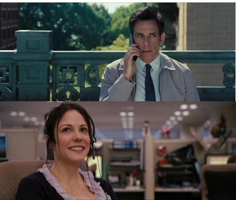
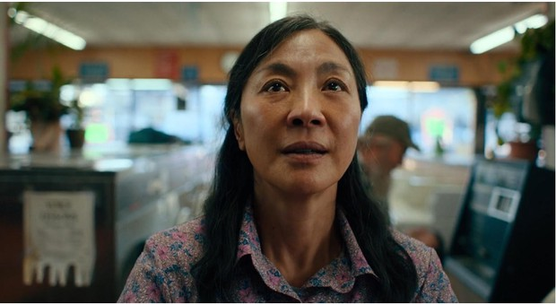
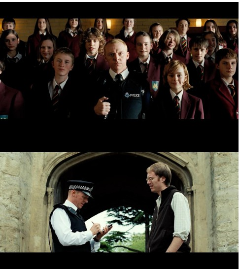
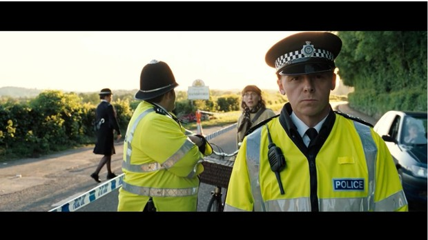
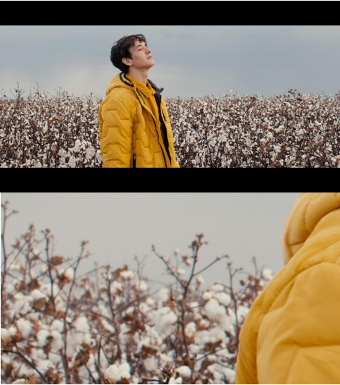
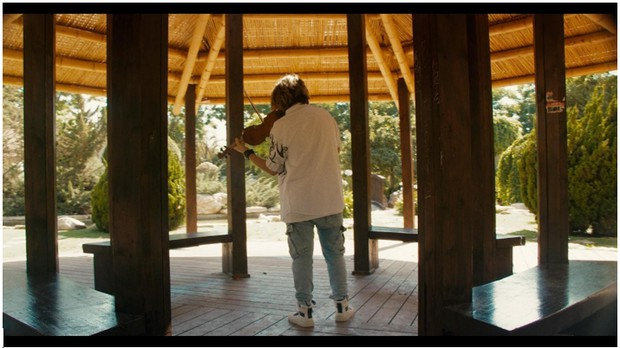
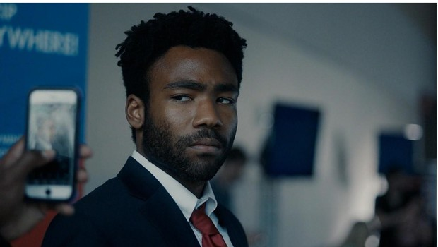
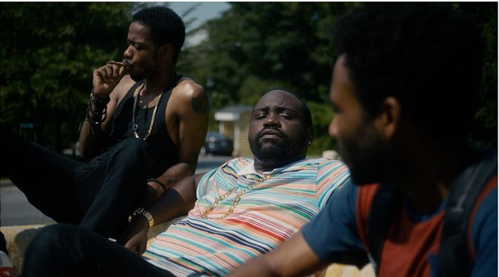
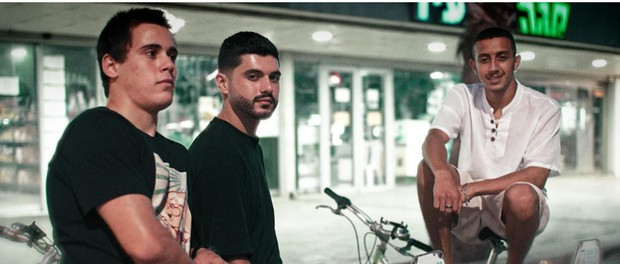
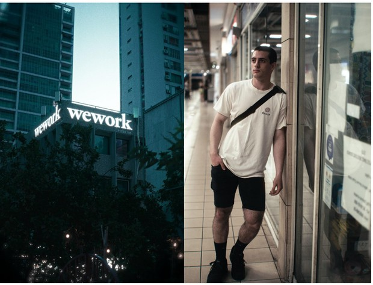

התחושה שאני רוצה להעביר דרך הסרט היא זו של עולם מקביל לשלנו, שממבט מרוחק יכול להיראות זהה למציאות, אך מופרד על ידי פרטים קטנים שנטמעים ברקע ויוצרים תחושה כוללת שמשהו בעולם הזה משונה. את התחושה הזו אעביר בעיקר באמצעות הארט ובניית העולם שסביב הדמויות – הרקע שפיתחתי לעולם כולל דמויות שמזכירות דמויות אמיתיות ומוכרות (כמו אפריים בימבו, שמהווה מקביל לביבי, אך בהקבלה מגוחכת), סכסוך פוליטי שמזכיר ומתבדח על הסכסוך הישראלי-פלסטיני וסוכנות מחתרתית שמכילה היררכיה שלמה של סוכני שטח, עובדים משרדיים וסגל עליון. כל העולם שנבנה נתמך על ידי ארט, כמו השלטים שמחזיקים האזרחים בהסכם השלום שמזכירים את אותם השלטים שתומכים ומתנגדים לביבי מחזיקים לקראת בחירות, דגל אלזמאניה שמזכיר דגלים של מדינות ערב, ופריטי אספנות בביתו של ארי שמזכירים פריטים מוכרים מההיסטוריה במציאות.
ז'אנר הסרט הינו קומדיית אקשן אבסורדית/סוריאליסטית, תת הז'אנר של האבסורד בתוך ז'אנר הקומדיה מציג לרוב סתירות לשפה הקולנועית המשויכת לרוב לז'אנר הסיפור, אני רוצה להשתמש בסתירות אלה לטובת הצגת נקודת המבט של ארי בסיפור – השפה הקולנועית של הסרט תייצג את נקודת המבט של ארי על הסיטואציה אליה הוא נקלע. עד לאירוע המחולל של הסרט, ארי חי שנים רבות חיים שהם סיזיפיים ובעלי שגרה כמעט קבועה, של קבלת הוראות והמתנה להוראות. כדי להמחיש זאת בסרט אשתמש בסיקוונס קבוע של שוטים בכל פעם שארי מקבל הוראה על ידו והשגרה חוזרת על עצמה.
עם זאת, התחושה העיקרית שהצילום נועד להביע היא זו של התקדמות הזמן והשתלשלות האירועים המהירה. התחושה הזו תעבור באמצעות תנועות מצלמה מהירות – וויפ פאן, וויפ טילט, דולי, וקראש זום.
ממבט חיצוני כל אחד מהדמויות בסרט אמור להיראות כמו טיפוס מוכר, כאלה שאפשר לשייך אותם לתבנית ידועה של טיפוסים מוקצנים. אך כאשר הסרט מתפתח ייחשף עולמם הפנימי של כל אחד, והדינמיקה ביניהם תחשוף עבר מסובך וקשה שהוביל אותם לרגע הזה.
ארי עשה דברים בחייו שנחשבים לבלתי נסלחים, הוא גרם למותם של מיליונים כתוצאה מהפעולות שעשה. למרות זאת, מהרגע הראשון, נקודת המבט שלו על העולם היא אחת שאפשר להתחבר אליה, הוא אנטי גיבור והצופה אמור לרצות לראות את ארי מצליח להגשים את רצונו. כדי לעשות זאת אצטרך להשתמש בבימוי השחקן של ארי כאמצעי להפוך את הדמות של ארי לאחת שקל להתחבר אליה למרות מגרעותייה. את זה אעשה באמצעות העמדת שחקנים המשקפת את הגיונו של ארי, בחירת זוויות הצילום המציגות את נקודת מבטו של ארי באור החיובי ביותר, ושפה קולנועית כוללת שמשרתת את נקודת מבטו בסיפור
העמדת השחקנים בסרט צריכה לשקף את מצבם הנפשי ויחסי הכוחות ביניהם. ארי הוא בחור קופצני, פזיז ולא נוטה להישאר בשקט, העמדתו צריכה לבטא את זה – הוא לא ישאר במקום אחד גם כאשר ידבר עם הנציג בטלפון על הגג.
למרות זאת, במהלך העימות בין ארי לצ'8 קיים פיל בחדר, ישנו נושא שלא מדובר אך שתי הדמויות מודעות אליו. צ'8 יודע שמטרתו הסופית היא לחסל את ארי, וארי יודע זאת גם כן. אף אחד מהשניים לא רוצה שהסיטואציה תסתבך מעבר למה שהיא צריכה, לכן הסוכן שומר על קור רוח ומקצועיות – הוא לא זז יותר מדי, תנועותיו מדויקות ומחושבות, וארי מנסה להקליל את הסיטואציה כדי להימנע מהגשמת מטרתו של הסוכן – הוא תמיד נשען לכיוונו של הסוכן, הוא נשאר בגובה העיניים של הסוכן, כך שאם הוא יעמוד, ארי יעמוד, ואם הוא ישב, ארי ישב. ארי משתדל לא לזוז יותר מדי כדי להשאיר את הסיטואציה סטטית ויציבה, אך ברגע שמתקבלת ההוראה על המסמך, ארי מבין שהקו נחצה ונעמד בהתגוננות, והסוכן כתגובה לכך נכנס למצב דרוך גם כן, עמדתו מתקשחת. ארי מפסיק להישען לכיוון הסוכן ואפילו נוטה לכיוון ההפוך, הוא אט אט מתרחק ממנו בניסיון להפיג את המתח חזרה למצב רגוע. הסוכן ברגעים אלה מתחיל להתרכך ומרפה את עמדתו הדרוכה, הוא נהיה מבולבל.
קומפוזיציה
הקומפוזיציות בסרט יהיו ברובן לא מאוזנות, במטרה להדגיש את נקודת המבט של ארי על העולם סביבו. כמו בכל עולם, שום דבר אינו מושלם, וארי מזהה את הפגמים האלה ואפילו מדגיש אותם לצורכי בידור והנאה. בנוסף, הקומפוזיציות בביתו של ארי צריכות להיות דחוסות בפרטים, בארט, וגוונים שונים, כדי ליצור תחושה של עומס ולחץ כאשר הסוכן מגיע לביתו ודוחס אותו לפינה.
 (קומפוזיציות לא מאוזנות, מתוך "החיים הסודיים של וולטר מיטי" (2013), ו"רד" (2010) )עם זאת, כאשר תשומת הלב המלאה מופנית אל דמות, חפץ או התרחשות, הקומפוזיציה תהיה סימטרית ומאוזנת, כדי להדגיש את חשיבות ההתרחשות במרכז הפריים. זה יקרה כאשר ארי יהיה לבד בביתו וכל תשומת הלב תופנה אליו ואל הבעיה שנקלע אליה.
 (קומפוזיציה סימטרית ומאוזנת, מתוך הכל בכל מקום בבת אחת, 2022)הצילום ברוב הסרט יהיה בתנועה, אם זה תנועות דולי שעוקבות אחרי הדמויות, וויפים של פאן וטילט לחיתוכים בין סצנות, או קראש זומים להעצמה של רגעים של גילוי פרטים חשובים להתקדמות העלילה. הצילום התנועתי מתאים יותר לז'אנר האקשן שבתוך ז'אנר הסרט – קומדיית אקשן אבסורדית/סוריאליסטית, ומטרתו להציג את תנועתיות הזמן של היקום בו ארי נמצא, והשתלשלות האירועים המהירה והמבלבלת שאליה נקלע ברגע שסירב להוראה.
המצלמה תרצה להתקרב אל ארי ברגעים בהם הוא מוצב מול מצב שנראה כביכול ללא מוצא, ובכך תיצור את התחושה שסוגרים את האפשרויות שלו לצאת מהסיטואציה. ברגעים כאלה, ארי ינחה את המצלמה במהירות לכיוונים אחרים, באמצעות וויפ פאן וטילט שיכוונו את המצלמה והסיטואציה למוקדי תשומת לב אחרים ויפיגו את המתח ממצבו של ארי.
כדי להראות את הרוטינה של קבלת ההוראות דרך נקודת מבטו של ארי אשתמש בסיקוונס של קראש זומים שיציגו את הדרך בה הוא רואה את עבודתו – אחת מהדרכים שבה נעזר ארי בשביל להסתגל לשגרתו היא הפיכת שגרת קבלת ההוראות למשהו מגניב וייחודי.
הסרט כולו יצולם דרך עדשות באורך מוקד נטרלי (Normal), בטווח שבין 27 ל-40 מילימטר. עדשות באורכי המוקד האלה נותנות תחושה מקורקעת שעוזרת לצופה להיכנס לתוך עולם הסרט, הן נותנות זווית ראייה דומה לזו של זווית הראייה של העין האנושית. היא לא רחבה מספיק בשביל לבלבל את הצופה עם פרטים מרובים, אך היא גם לא צרה מדי בשביל לתת לצופה תחושה מרוחקת מהמצטלם. טווח אורכי המוקד האלה נותן תחושה ריאליסטית ויאפשר לצופה להיטמע בעולם הסרט למרות האבסורד שלו.
  (דוגמה לשימוש בעדשות נורמל בסרט אבסורדי, מתוך שוטרים לוהטים, 2007)עם זאת נקודת המבט של ארי היא זו שמוצגת דרכה הסיפור, וזוהי נקודת מבט של אדם שרואה את הפגמים בעולם סביבו, דרך עין סרקסטית שמגחיכה סיטואציות. את הפגמים שארי רואה ארצה להקצין גם דרך הצילום בכך שאשתמש בעדשות וינטג'. כמו עם התקדמות טכנולוגיית הווידיאו, ששואפת למראה הכי חד ונקי שניתן להשגה, כך גם ההתקדמות הטכנולוגית בהנדסת אופטיקה. התעשייה שואפת להגיע לתמונה הכי חדשה ו"קריספית", לשחזור הצבעים הטוב ביותר ולדיוק המירבי של המציאות.
למרות זאת, השאיפה להגעה לתמונה הכי חדה ונקייה היא אחת ששואבת את האופי של העדשות, שהוא עוד אמצעי להבעה קולנועית ביצירת תוכן, וקולנוע במיוחד. לכן בהרבה סרטים כיום, במאים וצלמים חוזרים אחורה ובוחרים להשתמש דווקא בעדשות מפעם, כאלה בהן יש פגמים ויזואלים כמו סטיות צבע, טשטוש בצדי התמונה, וינייט ודליפות אור. הפגמים לרוב נובעים מחוסר הטכנולוגיה שהייתה בתקופת ייצור העדשה, אך כתוצאה מכך כל עדשה מקבלת אופי משלה, עם אי-דיוקים אחרים שנותנים תחושות שונות ומשמשים כאמצעי להבעה קולנועית מסוגננת.
בסרט ארצה להשתמש בעדשות Zeiss Distagon, אלו הן עדשות מחברת Zeiss הגרמנית אשר תוכננו והונדסו בסוף שנות ה50 של המאה הקודמת, ומשמשות כיום כעדשות בעלי סגנון ייחודי ליוצרי תוכן ברחבי העולם. הן עדשות זולות עקב גילן הוותיק ומאופיינות בסטיית צבע קלה שנוטה לגוונים הכחולים באזורים אשר מחוץ לפוקוס
 (דוגמה לשימוש בעדשות וינטג' Zeiss Distagon, מתוך הקליפ "מקום שקט" של גל ניסן, 2022)Aspect Ratio
יחס רוחב-גובה של הסרט יהיה 17:9, היחס הזה מוכר בתור יחס DCI של 4k אמיתי. הוא אינו מתאים בדיוק לסטנדרט המסכים הנפוץ של 16:9, אך גם אינו רחב כמו 21:9 שיוצר את התחושה האנמורפית הקולנועית. הסיבה לבחירת היחס הזה היא שוב למען העברת תחושה שונה מעט מהרגיל, סוריאליסטית במידה מועטה. חוסר התאמה לסטנדרט הרגיל של מסכי הטלוויזיה, המחשב והקולנוע, מתכתב שוב עם העולם שאותו אני מנסה ליצור בסרט, שנראה כמעט מקביל לשלנו, למעט פרטים קטנים שנותנים את התחושה שמשהו לא במקום.
 (דוגמה ליחס רוחב-גובה של 17:9, מתוך וידיאו קליפ של הכנר יאן אלדור)הצבעוניות של הסרט מגיעה במטרה לשרת את הסיפור, ובפרט את נקודת מבטו של ארי בסיפור. ארי רואה את העולם סביבו דרך עיניים צבעוניות יותר מהשאר, בעיניו העולם מלא בחיים ובדברים לראות ולעשות.
הווידיאו של היום הוא בעל מראה מהונדס ונקי, במשך שנים כיוונו יצרני המצלמות הדיגיטליות והעדשות החדשות ליצור מראה חד ונקי. בניגוד לטכנולוגיה הישנה, שבה קיימים הרבה פגמים כמו סטיות כרומטיות, דליפת אור, טשטוש, וינייט ועוד. אך האופי החדש שמוכתב על ידי יצרני המצלמות והעדשות גורע מהאופי הקיים בכל סרט צילום שונה, ובכל עדשה שונה, ושואף להגיע לתמונה אחידה ונקייה.
מכיוון שארי רואה את האנושיות שבעולם סביבו ואת אופיו, אני רוצה לתת בעזרת הצבעוניות של הסרט מראה שמציג אופי מעט ישן, וינטג'. בעזרת בחירת עדשות ישנות, תאורה, ועריכת צבע אתן לסרט את המראה הקלאסי של סרט הצילום Kodak Vision 3 500T.
 (אטלנטה, 2016)סרט הצילום הזה מאופיין בצללים קרים, והיילייטים חמימים. טמפרטורת הצבע שלו שווה בערך ל3200K, ונותנת מראה קריר יותר לאור יום. המטרה בבחירת סרט הצילום הזה כרפרנס לצבעוניות אינה בשביל להעתיקו, אלא לקחת ממנו השראה ולהיעזר באופי שלו בשביל לספר את הסיפור דרך עיניו של ארי.
 (אטלנטה, 2016)את המראה של הפילם ניתן להשיג בעזרת עריכת צבע מתקדמת כמו בפריימים הבאים, אשר צולמו במצלמה דיגיטלית Sony A7III, ועברו עריכת צבע ועיבוד למראה של פילם על ידי:
 (פריים שצולם במצלמה דיגיטלית – Sony A7III, ועבר עריכת צבע ועיבוד למראה של פילם על ידי)  (פריימים שצולמו במצלמה דיגיטלית – Sony A7III, ועברו עריכת צבע ועיבוד למראה של פילם על ידי) צבעוניות - Google Driveהז'אנר של הסרט "1, 426" הוא קומדיית אקשן אבסורדית.
התפיסה הפילוסופית של האבסורד הופצה בעולם בעקבות אירועי מלחמת העולם השנייה, אשר גרמה לרבים לאבד אמונה בעולם ולתפוס לעצמם גישה על פיה לשום דבר שקורה אין משמעות. האבסורד נוטה לרוב לכיוון ההומור והסאטירה, כאשר שום נושא אינו טאבו ואפשר לבחון כל נושא. האבסורד לרוב בא לבקר או לבחון תפיסות חברתיות סטנדרטיות. אחת הדוגמאות הקלאסיות לאבסורד, שאת תחילת דרכו עשה בתיאטרון, הוא המחזה 'קרנפים' של יונסקו, הבוחן את הקונספט של קונפורמיזם. אבסורד ברובו בא לשבור ציפיות ולנגוד את הנורמה ואת ההרגלים שלנו, הוא נוגד את המציאות היות ולשום דבר אין משמעות.
בהטלת האבסורד על צילום קולנועי, ניתן לומר ש"אין חוקים". בניגוד לדרמות ריאליסטיות שבהן הצילום נועד להעצים ולהדגיש תחושות ורגשות אמיתיים ובעלי הזדהות, באבסורד הצילום יבוא בהפוך על הפוך ויפתיע את הקהל. רגעים דרמטיים יוכלו להיות מצולמים בשוט רחב ומואר היטב, בעוד שרגע קליל יכול להתארך ולמלא סרט שלם בשוטים אפלים, סגורים ומבעיתים.
סרטי אקשן הם סרטים בהם הדמות הראשית נקלעת לרצף אירועים בעלי סיכון גבוה, כאשר עליה לפעול באופן פיזי ותזזיתי. לרוב סרטי אקשן ידגישו את ההירואיות או את כוחה ותושייותה של הדמות הראשית. סרטי אקשן מאופיינים בריבוי שוטים, מעבר חד בין קלוז אפים המדגישים את הפעולות של הגיבור ושל אויביו, לדוגמה מתן אגרוף וכו', כמו כן ישנו שימוש רב בתנועות מצלמה, בין אם יציבות ובין אם ידניות בהתאם לתחושה שהבמאי רוצה להעביר בסרט. סרטי אקשן לרוב יהיו בעלי תאורה קשה שמדגישה את גבריותן וקשיחותן של הדמויות הראשיות.
ז'אנר הקומדיה נשען על הומור ונועד להצחיק את הקהל. לרוב יעסוק בגיבורים רציניים שמתמודדים עם סיטואציות מגוכחות, או גיבורים מגוכחים שמתמודדים עם סיטואציות רציניות. בקולנוע ישנן דרכים רבות להעביר קומדיה והומור, כאשר שתי הדרכים המרכזיות הן טקסט וצילום. לרוב, בקומדיות עכשוויות, ההומור יעשה כמעט ונטו באופן טקסטואלי כאשר הצילום הוא רק כלי, על פיו הצילום הוא רחב ובעל תאורה שוטפת. מנגד, ישנה השיטה "קומדיה ויזואלית", על פיה הצילום הוא זה שגורם לסיטואציה להיות הומוריסטית ומדגיש את הקומדיה שבסיטואציות.
קומדיה ויזואלית מתאפיינת בדרכים רבות, ביניהן – הדרך בה אובייקטים נכנסים ו\או יוצאים מהפריים, שימת דגש על פריט שמרגיש שולי לכאורה, הצגה או חוסר הצגה של אובייקט במרחב, לדוגמה כאשר מרכלים על דמות ופתאום רואים שהייתה כל הזמן בחדר, ותנועות מצלמה לא צפויות.
הסרט 1, 426 ישען על שלושת הז'אנרים הנ"ל – אבסורד, אקשן וקומדיה, בדגש על קומדיה ויזואלית. הסרט יצולם באופן מהיר ותזזיתי, בעל תנועות מצלמה רבות וקראש זומים. היות והסרט הוא קומדיית אבסורד, הצילום ידגיש לעתים דברים לכאורה שוליים או לא ייתן מספיק דגש למשפטים או אירועים 'חשובים'. ההשראות שלי לצילום הסרט הן Shaun of the dead, Hot Fuzz, ו Grand Budapest Hotel.
Hot Fuzz צולם ברובו בעדשות נורמל, סביבות ה27-35 מ''מ. מה שנותן תחושת ריאליזם, ונותן זמן לעכל את הנושא ואת הסצנה לפני רצפי האירועים המהירים, בהם ישנו שימוש רב בקראש זומים, אקסטרים קלוז אפים, פאנים וטילטים.
מתוך שוטרים לוהטים. הקליפ הנ"ל מראה דוגמה לשיחה שמובילה ל'אקשן' או חשיפה של פרט חדש בסגנון הצילום המדובר.
Dead מתמקד בבריחה והתחבאות מהזומבים ועל כן אקח השראה מהדרך בה אדגר רייט (הבמאי) הראה את האמצעים בהם הדמויות הראשיות הגנו על עצמן, כמו להראות את הגיבור בקרבה לסכנה שממנה הוא מתחמק, כאשר המצלמה משאירה את הגיבור באופן מכוון ליד הסכנה כדי להגכיח את תגובתו.
מתוך מת על המתים 5:44-6:03
Grand Budapest Hotel מאופיין בשוטים מאוד סימטריים ומהונדסים. בעוד ובסרט שלנו אין את החיפוש אחר הסימטריה, אקח השראה מהדרך בה ווס אנדרסון השתמש במצלמה כדי להעביר תחושות הומוריסטיות, כמו פאן שחושף דלת, או שוט רחב יחסית במתן אגרוף שמפיל את הדמות הראשית ומגכיח את הסיטואציה.
מתוך מלון הגראנד בודפשט